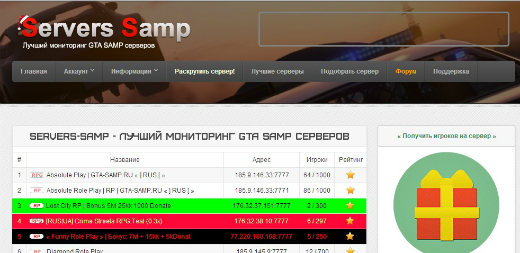
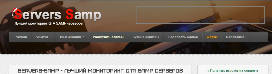

На данной странице представлен анализ юзабилити сайта Servers Samp (http://servers-samp.ru/).
При первом входе на сайте (на главной странице) появляется таблица, в которой есть перечень мониторинга серверов, в котором строки выделены слишком ярким цветом...Это может отпугнуть многих пользователей, так как долго этот список просматривать невозможно. В таблице используются слшком яркие цвета, которые неприятны глазу.

При первом входе на сайте в заголовке страницы можно наблюдать картинку, которая ни о чем не говорит и не дает никакой информации о б услугах или продуктах, которые предлагает данный сайт. Это тоже может отпугнуть определенную категорию клиентов.
Также заголовок страницы содержит непонятный квадрат, который не выделяет никакой инфоромации, но очень отвликает внимание. Также в заголовке отсутствуют какие-либо контактные данные компании.

Как показывают исследования, пользователи нередко ищут информацию на сайте, сразу прибегая к внутреннему поиску, не пользуясь системой навигации. Поиск по сайту - очень важный элемент юзабилити сайта. Однако на данном сайте компания принебрегла таким, немаловажным, элементом. Около 10% пользователей постоянно пользуются поиском.
Чтобы поиск был удобным, следует придерживаться следующих правил:
1. В идеале форма поиска должна размещаться на всех страницах сайта в верхней области (традиционно, верхний правый угол).
2. Оптимальная длина поля для ввода запроса – 27-30 символов
3. Поиск на сайте должен быть только внутренним (по сайту). Не следует предлагать пользователям поиск на внешних ресурсах, в интернете, так как для этого существуют глобальные поисковые системы.
4. Оформление страницы с результатами поиска должно быть максимально приближенно к странице выдачи глобальных поисковых систем: содержать поле для ввода запроса с введенным посетителем запросом, список результатов должен содержать заголовок (со ссылкой), краткое описание, можно также добавить URL или раздел, к которому относится результат.
5. Используйте функцию проверки орфографии, как в глобальных поисковых системах. При вводе поискового запроса с ошибкой следует выводить строку «Возможно, Вы имели в виду [правильное написание запроса]?»
На сайте полностью отсутствует строка навигации, поэтому рекомендуется:
1. Рекомендуется делать одинаковую навигацию на всех страницах сайта.
2. В шапке сайта и в «подвале» должна находиться контактная информация (хотя бы телефон).
3. На странице должно содержаться название раздел.
4. Желательно расположение указателя «Вы находитесь здесь» (выделение текущего раздела в меню).